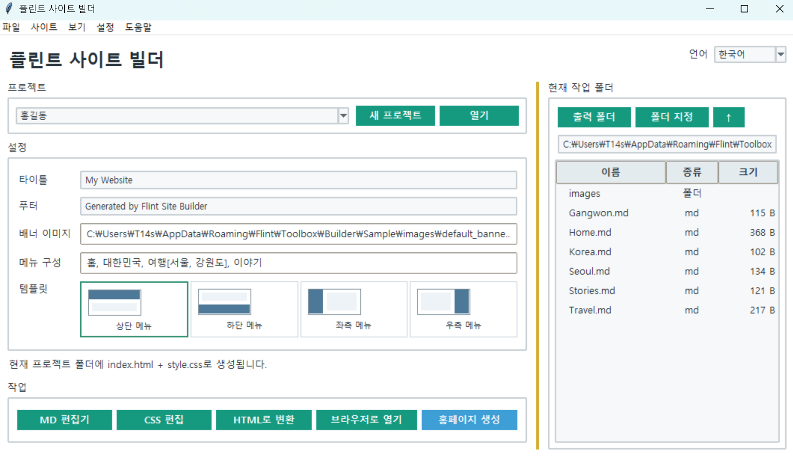

플린트 사이트 빌더
버전: 1.0.1
Flint Site Builder
Markdown 문서를 기반으로 정적 HTML 홈페이지를 제작하는 GUI 기반 사이트 제작 도구입니다.
Markdown 원본은 그대로 유지하면서 메뉴, 배너, 디자인, CSS를 설정하고 완성된 사이트를 별도의 출력 폴더에 생성할 수 있습니다. 상단 / 하단 / 좌측 / 우측 메뉴형에 포함되지 않는 Markdown 문서는 HTML 변환 기능을 이용해 개별 HTML 문서로 변환할 수도 있습니다.
사용 방법
- 새 프로젝트를 만들거나 기존 프로젝트를 엽니다.
- 작업 폴더의 Markdown 문서를 메뉴에 연결합니다.
- 메뉴, 배너와 템플릿 디자인을 설정합니다.
- 미리보기로 확인한 뒤
사이트 생성을 실행합니다.
메뉴 구성
일반 메뉴는 쉼표로 구분하고 하위 카테고리는 [] 안에 작성합니다.
홈, 대한민국, 여행[서울, 강원도], 이야기
각 메뉴에는 Markdown 문서 또는 이메일 주소를 연결할 수 있습니다.
템플릿 디자인
HTML 구조는 상단 / 하단 / 좌측 / 우측 메뉴형 4종이며 각 구조마다 다음 3가지 디자인을 제공합니다.
Default: 기본 디자인Unlimited Banner: 배너 폭을 넓게 사용하는 디자인Menu Jump: 스티키 메뉴 대신 버튼으로 메뉴 위치로 이동하는 디자인
HTML 골격은 4종으로 유지하고 디자인은 CSS로 적용하므로 총 12개의 기본 디자인을 사용할 수 있습니다.
Markdown 링크
Markdown 문서끼리는 일반적인 .md 링크로 연결할 수 있습니다.
[Seoul](Seoul.md)
사이트 생성 또는 HTML 변환 시 로컬 .md 링크는 자동으로 .html 링크로 변환됩니다. 외부 URL, 이메일 링크, 이미지 링크 등은 변경하지 않습니다.
HTML 변환
상단 / 하단 / 좌측 / 우측 메뉴형 사이트 구조에 포함하지 않을 Markdown 문서는 HTML 변환 기능으로 별도 변환할 수 있습니다.
폴더를 선택하면 .md 파일을 .html로 변환하고 일반 파일은 그대로 복사합니다. 하위 폴더 포함을 사용하면 원본 폴더 구조도 유지됩니다.
편집과 미리보기
Markdown과 CSS를 프로그램에서 직접 편집할 수 있으며 GUI 렌더 미리보기와 실제 브라우저 미리보기를 지원합니다.
주요 기능
- Markdown 기반 정적 HTML 사이트 생성
- 프로젝트 저장 / 불러오기
- 상단 / 하단 / 좌측 / 우측 4종 HTML 레이아웃
- Default / Unlimited Banner / Menu Jump 12개 디자인
- 메뉴 및 하위 카테고리 구성
- 배너 이미지와 문구 설정
- Markdown / CSS 직접 편집
- Markdown 링크
.md→.html자동 변환 - 독립적인 Markdown 문서의 HTML 일괄 변환
- 폴더 구조 및 일반 파일 복제
- GUI / 브라우저 미리보기
- 한국어 / 영어 UI
- 기본 Sample 제공 및 기존 Sample 보존
실행
필수 패키지 설치:
pip install markdown
실행:
python builder.py
참고:실행 파일(EXE) 버전을 사용하는 경우에는 필수 패키지 설치나 python 명령을 실행할 필요가 없습니다.
명령줄 변환
GUI 없이 폴더의 Markdown 문서를 HTML로 일괄 변환할 수도 있습니다.
builder.py <폴더>
builder.py C:\Docs /s
builder.py C:\Docs -o web
builder.py C:\Docs --keep
/s: 하위 폴더 포함-o: 출력 폴더 지정--keep:.md링크를.html로 변환하지 않음
아무 인수 없이 실행하면 GUI가 실행됩니다.